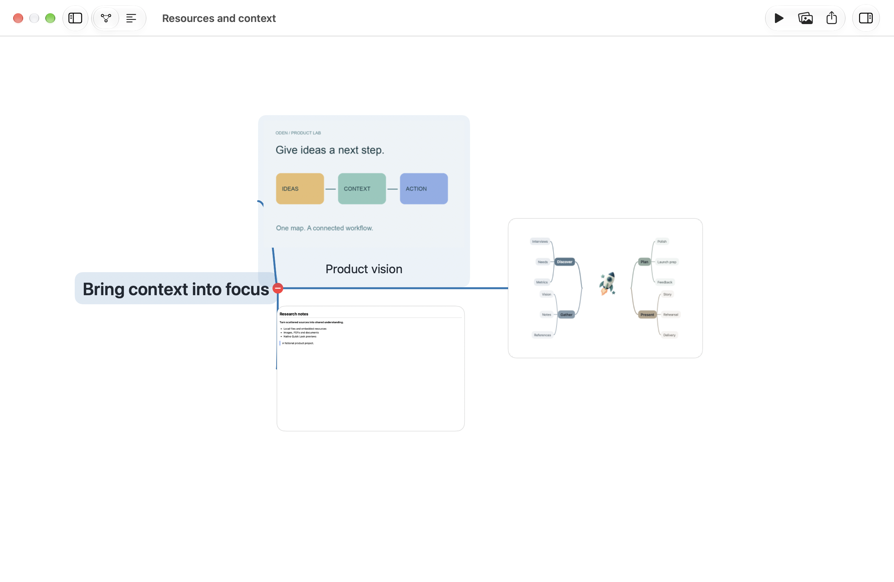
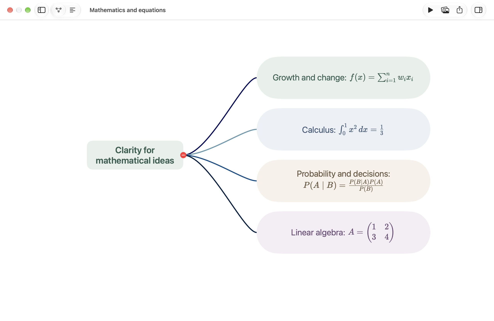
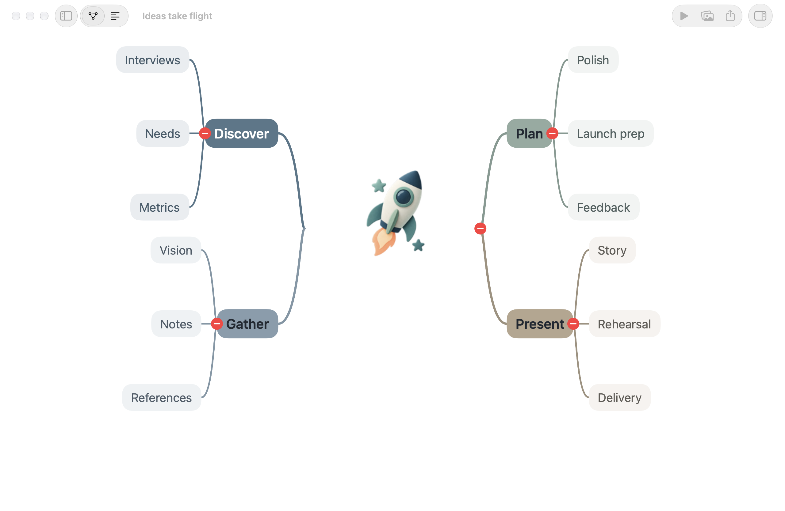
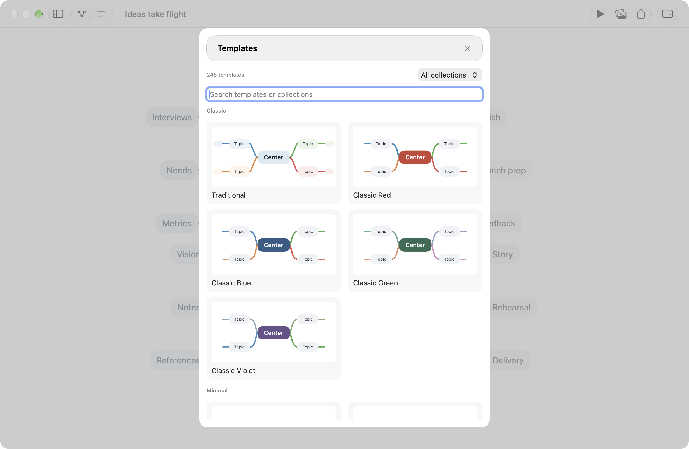

Keep resources in order.专业管理资料。
Search, filter, preview, and relink files. Switch between embedded resources and external links. Your sources stay connected to their purpose.搜索、筛选、快速预览与重新链接。在嵌入资源与外部链接间转换，让资料始终连接它的用途。
Your ideas don't live in text alone. Bring PDFs, video, Keynote, and even other mind maps onto an infinite canvas. Let your sources become part of your thinking.思考，从来不只有文字。把 PDF、视频、Keynote，甚至另一张思维导图放进无限画布。让资料，成为思路的一部分。

Actual Oden interface with an illustrative project. More launch visuals are being prepared.Oden 真实界面与演示项目。更丰富的首发素材正在制作。
Build a map of your research, then place a whole supporting map inside it as a resource node. Connect a PDF to an idea. Play a video on the canvas. Turn pages in a document without losing your place. Organize knowledge at more than one scale.用一张图梳理研究，再把另一张完整导图作为资源节点放进去。让 PDF 连接一个观点，直接在画布上播放视频、翻阅文稿。总览与细节，可以同时存在。
Resource maps are previews of an imported structure; they do not provide in-place editing of every nested level. Multipage Office/iWork previews depend on the file's embedded preview. Format-specific support varies.导图资源节点展示导入结构的预览，并非在卡片内编辑任意层嵌套导图。Office/iWork 多页预览取决于文件自带预览；不同格式支持范围有所不同。
Write inline and multiline LaTeX alongside Markdown and rich text. Fractions, matrices, aligned equations, and cases become part of your topics, with editable TeX source. Switch between map and outline to develop the same content.LaTeX 行内与多行公式，和 Markdown、富文本一起编辑。分式、矩阵、对齐公式与分段表达式直接进入主题，保留可修改的 TeX 源码。切换导图与大纲，继续同一份内容。

Choose from 248 templates and 311 palettes. Put an image or supported file above a text topic, keeping its words and context together. Transparent icons blend into your design. Shape individual connections with width, dashes, opacity, arrows, and pressure curves.248 套模板、311 套配色。图片与受支持的文件都能附在文字主题上方，资料和文字共同组成节点。透明图标自然融入设计，再用线宽、虚线、透明度、箭头与压力曲线，塑造每条连线。


Search, filter, preview, and relink files. Switch between embedded resources and external links. Your sources stay connected to their purpose.搜索、筛选、快速预览与重新链接。在嵌入资源与外部链接间转换，让资料始终连接它的用途。
A dedicated presentation window with branch reveals, speaker notes, a spotlight, and timing. No need to rebuild your thinking as slides.独立演讲窗口、分支展开、提词备注、聚光指针与计时。已有思路，直接成为讲述的结构。
PDF/X-4 and PDF/X-3, CMYK ICC profiles, poster tiling, bleed, and crop marks. Export previews and preflight checks help you prepare print files.PDF/X-4、PDF/X-3、CMYK ICC、海报拼接、出血和裁切标记。导出预览与印前检查辅助专业交付。
Internal checks cover structure changes, branch moves, undo, and redo in a 20,000-level chain. Dedicated long-topic loading tests recorded a 52% reduction versus the earlier implementation.内部检查覆盖两万层深链的结构切换、分支移动、撤销与重做。专项长主题测试中，加载耗时较优化前降低约 52%。
These are scenario-specific internal results, not a guarantee of smooth full-map rendering. Dense views containing 20,000 visible nodes still have noticeable delays.数字来自特定内部场景，不代表全景渲染流畅度。两万节点同时铺满视野时，仍有明显延迟。
Mac first. One-time purchase. iOS is planned for a future release.Mac 先行，买断使用。iOS 版本计划后续推出。
Questions? Get support了解更多与获取支持